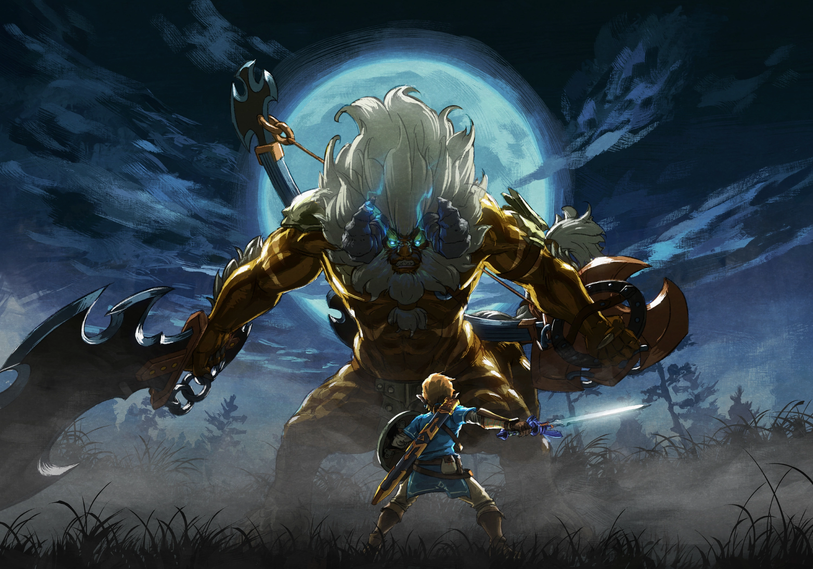

Publishing Info
- Published by:
Nintendo
- Developed by:
Nintendo EPD
- Released:
March 3rd, 2017

Description
Forget everything you know about The Legend of Zelda games. Step into a world of discovery, exploration, and adventure in The Legend of Zelda: Breath of the Wild, a boundary-breaking new game in the acclaimed series.
Travel across vast fields, through forests, and to mountain peaks as you discover what has become of the kingdom of Hyrule In this stunning Open-Air Adventure. Now on Nintendo Switch, your journey is freer and more open than ever. Take your system anywhere, and adventure as Link any way you like.
Game Categories
- Genre:
Action-Adventure
- Perspective:
Third Person
- Players:
1
- Consoles:
Nintendo Wii U, Nintendo Switch

Quote
The Legend of Zelda: Breath of the Wild is a masterclass in open-world design and a watershed game that reinvents a 30-year-old franchise. It presents a wonderful sandbox full of mystery, dangling dozens upon dozens of tantalizing things in front of you that just beg to be explored.
I’ve had so many adventures in Breath of the Wild, and each one has a unique story behind what led me to them, making them stories on top of stories.
And even after I’ve spent more than 50 hours searching the far reaches of Hyrule, I still manage to come across things I haven’t seen before. I’ll easily spend 50 to 100 more trying to track down its fascinating moments.
"The Legend of Zelda: Breath of the Wild Review"